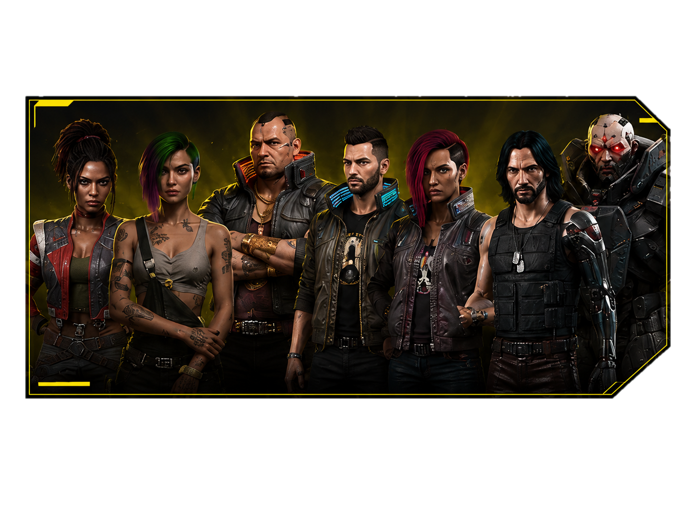
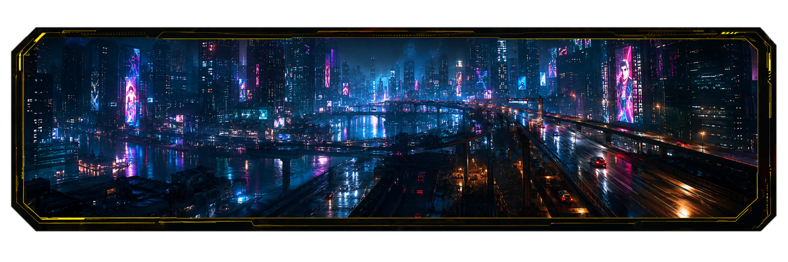
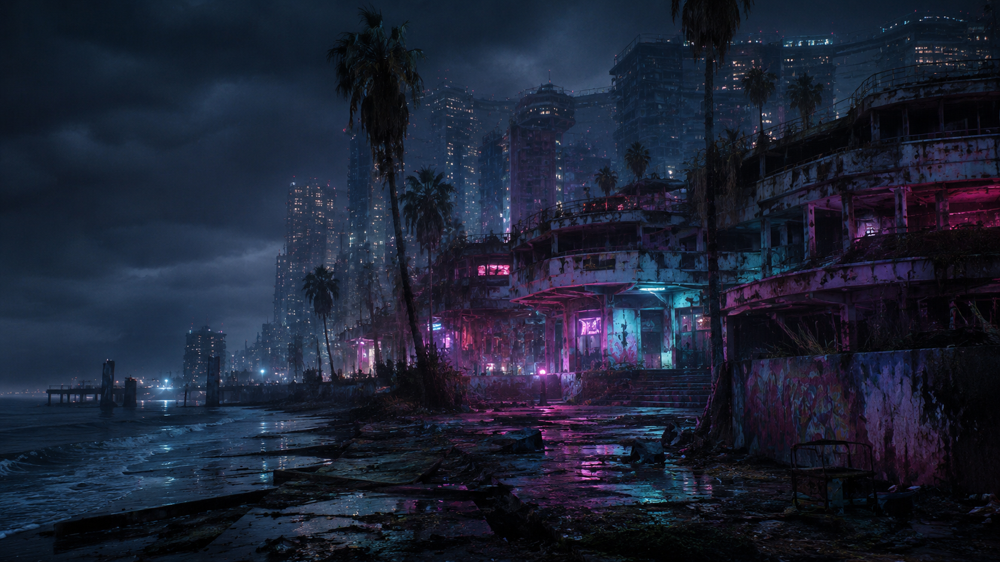
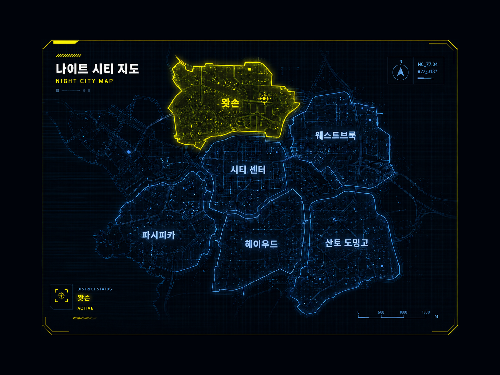

나이트 시티의 전설
V의 여정을 함께한 잊지 못할 크루를 조명합니다
자세히 보기 →오픈월드 액션 RPG
나이트 시티, 거대 기업, 사이버 네트워크, 무법자들이 지배하는 도시. 당신은 머서너리다. 사이버웨어로 무장하고, 선택으로 미래를 바꿔라.

캐릭터 스포트라이트
"이 도시에서, 전설은 혼자 만들어지지 않는다."
노마드, 테크니션, 솔로, 락커보이까지 — 나이트 시티를 뒤흔든 전설들을 만나보라.
캐릭터를 선택하세요 _
세계관
거대 기업의 탐욕과 지하 세계의 욕망, 사이버 네트워크가 얽힌 거대한 미로. 당신의 선택이 이 도시의 미래를 바꾼다.

도시 구역
한때 아라사카의 투자로 번성했지만 기업이 떠난 뒤 방치된 구역.
이민자와 노점상, 타이거 클로와 메일스트롬이 뒤엉킨 나이트 시티의 용광로다.

